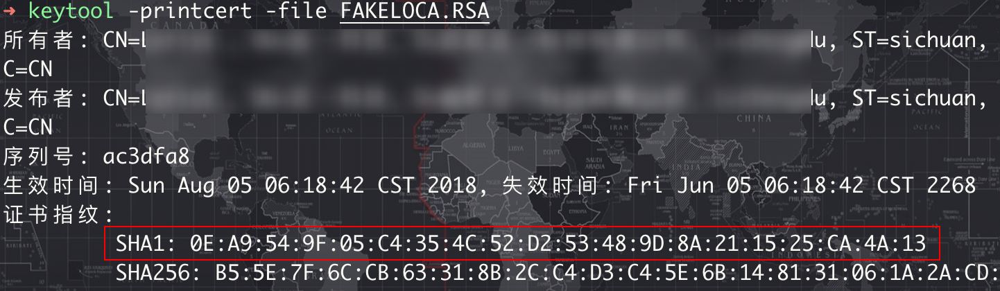

一次某APP的修复之旅
0x00 前言
最近发现某款APP无法正常使用，打开后地图页面是空白内容，无法显示和使用地图。经过排查，原来是开发者更新了百度地图的API Key，导致旧版本的APP无法正常访问地图服务。
0x01 问题分析
APP启动后地图界面呈现空白状态，选择定位也是空白，确认位置提示“请点击地图选择位置”。
通过抓包，提示”APP Mcode码校验失败”。
说明该APP的百度地图APIKey与SHA1不匹配导致的，解决方法是替换为对应的APIKey和SHA1即可。
这里有几种解决方案，每种方法都有其优缺点，可以根据实际需求选择最适合的方式。解决方案：
1.反编译并替换APIKey（较为复杂，不推荐）：
- 步骤： 解压APK文件，找到
AndroidManifest.xml文件中的com.baidu.lbsapi.API_KEY值，替换为正确的APIKey。然后重新打包并签名APK。 - 缺点： 该APP具有签名校验机制，重新打包后可能导致APP无法正常运行，且后续修改较为复杂。因此，此方法不推荐使用。
2.抓包软件拦截替换（简单）：
- 步骤： 使用抓包工具（如小黄鸟）拦截APP发出的网络请求，将请求中的ak参数（即APIKey）替换为新的APIKey。
- 优点： 实现简单，无需修改APP本身。
- 缺点： 每次使用APP时都需要开启抓包工具。
3.HOOK技术动态修改（较复杂，但使用最方便）：
- 步骤： 使用HOOK框架（如Xposed）动态修改APP中百度地图APIKey的获取逻辑，使其返回正确的APIKey。
- 优点： 一旦实现，后续使用无需额外操作，体验最为流畅。
0x02 过程
无论是上面的哪种方案，都首需要获取正确的APIKey。APIKey可以自己申请，也可以查看新版本的APP中的APIKey是什么，然后进行替换。
自己申请的话，需要注册、认证百度地图开放平台 https://lbsyun.baidu.com/apiconsole/key ，然后创建一个Android应用。
选择一些所需的服务，需要有定位和地图SDK。
填写发布版SHA1和PackageName
- 发布版SHA1：0E:A9:54:9F:05:C4:35:4C:52:D2:53:48:9D:8A:21:15:25:CA:4A:13
- PackageName：com.lerist.***tion （该应用的包名）
这里的SHA1是抓包的时候请求里面的，也可以手动计算。
1 | unzip Fxxxx1.3.5BETA_xxx.apk -d FK |

用自己申请的APIKey进行测试。
发现是可以正常使用了。
如果不想自己申请SDK，也可以用新版本中的APIKey进行替换。
我们下载新版本进行查看
新版本的APIKey是 kGdfeSE3SeAUkeGtur7g8uIXbCx4alFN 。
同样测试一下新版本中的APIKey，也是可以正常使用的。
接下来用可以使用的APIKey进行替换，这里以新版本中的APIKey为例。
1.抓包替换
这里采用的抓包工具是小黄鸟（需安装证书，否则无法抓包），打开小黄鸟，开启抓包，运行APP。
找到请求https://api.map.baidu.com/sdkcs/verify ，长按选择重写功能。
修改请求体，选择在线编辑或规则替换。
替换ak参数（即APIKey），修改为新的APIKey。
保存，可以看到重写器保存并激活成功。
重写运行app，发现地图功能已经可以正常使用了。
下次运行app时，打开抓包工具，运行抓包即可（重写器默认已经开启了）。
2.HOOK方法
hook的话也有多种方法，比如可以直接HOOK ApplicationPackageManager的getApplicationInfo方法来修改。
主要代码：
1 | XposedHelpers.findAndHookMethod( |
也可以看一下百度地图SDK哪里使用了com.baidu.lbsapi.API_KEY，然后进行修改。对APP进行脱壳反编译并修复，打开dex文件。
1 | root:~# grep -rnH --color=auto "com.baidu.lbsapi.API_KEY" * |
通过搜索，一共有3处用到了com.baidu.lbsapi.API_KEY。
其中有一处仅仅读取了，未进行进一步调用，因此可以忽略。
其余两处均有实际使用，针对这两处，我们可以通过HOOK修改返回值即可。
上面这个图是搜索的 BaiduLBS_Android.jar ，classes2.dex中的
com.baidu.lbsapi.auth.LBSAuthManager的a方法使用jadx查看没有反编译完全。
主要代码：
1 | XposedHelpers.findAndHookMethod("com.baidu.lbsapi.auth.LBSAuthManager", classLoader, "getPublicKey", "android.content.Context", new XC_MethodHook() { |
编译后并启用该模块，地图也可以正常使用。
0x03 总结
之所以不用新版的APP，因为该软件是收费软件，而旧版本有激活的模块，所以选择在旧版本上进行修复。另外需要注意的是，该APP加壳，所以在写Xposed模块时需要找到壳的入口类，在这个类里面去获取context参数，然后就可以通过context获得到壳的类加载器，之后只需要用这个类加载器来hook即可。